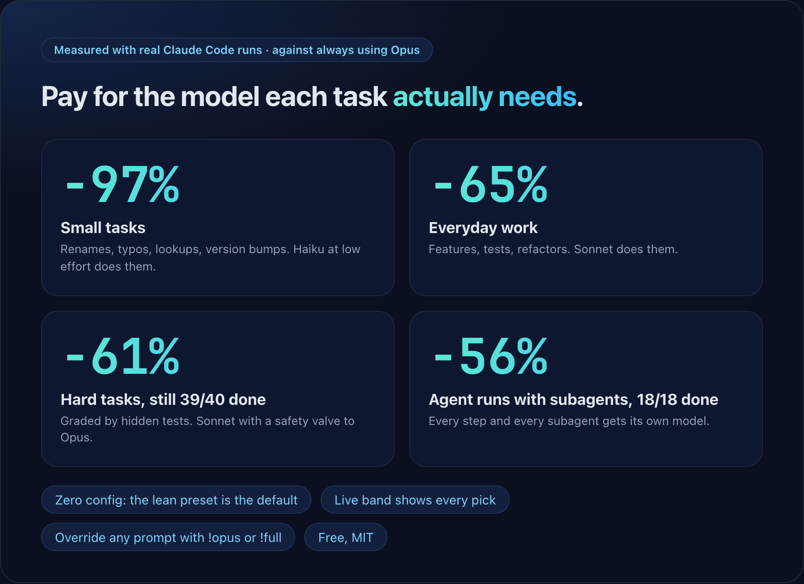
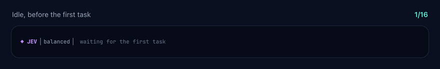
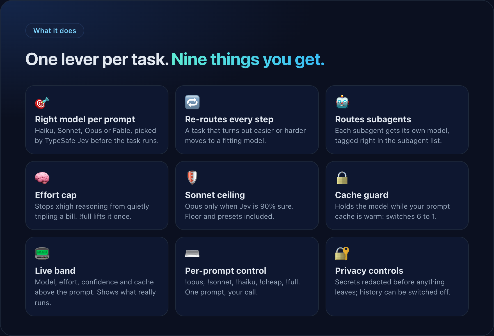
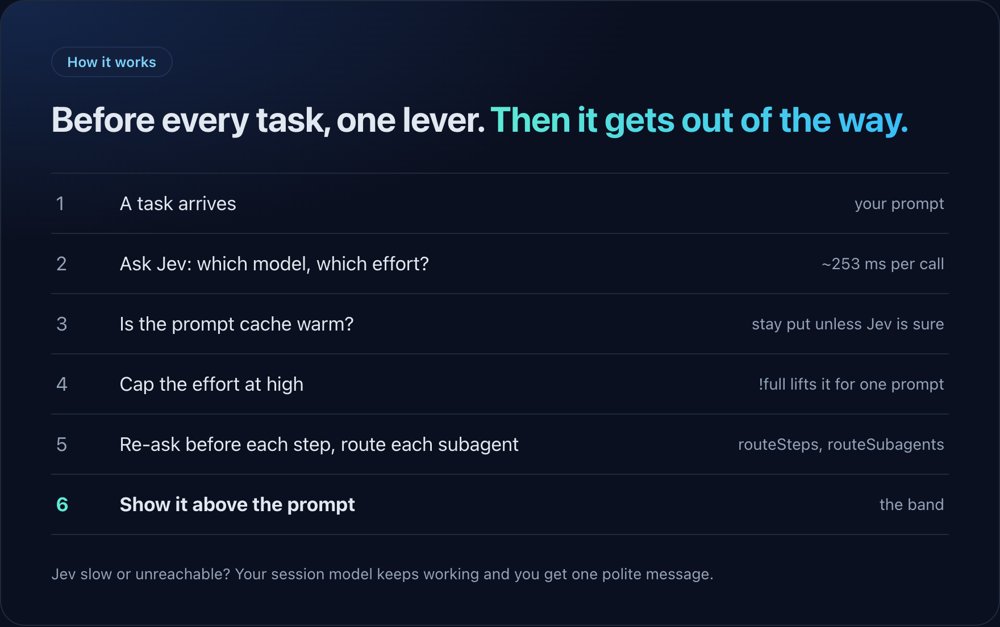
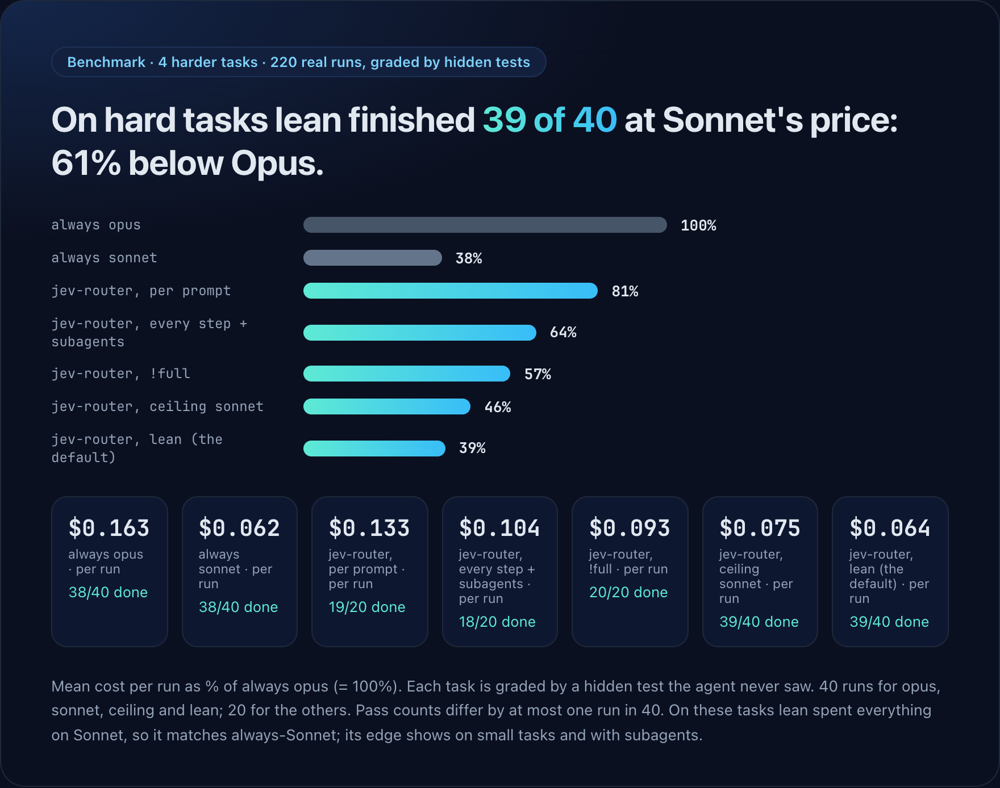
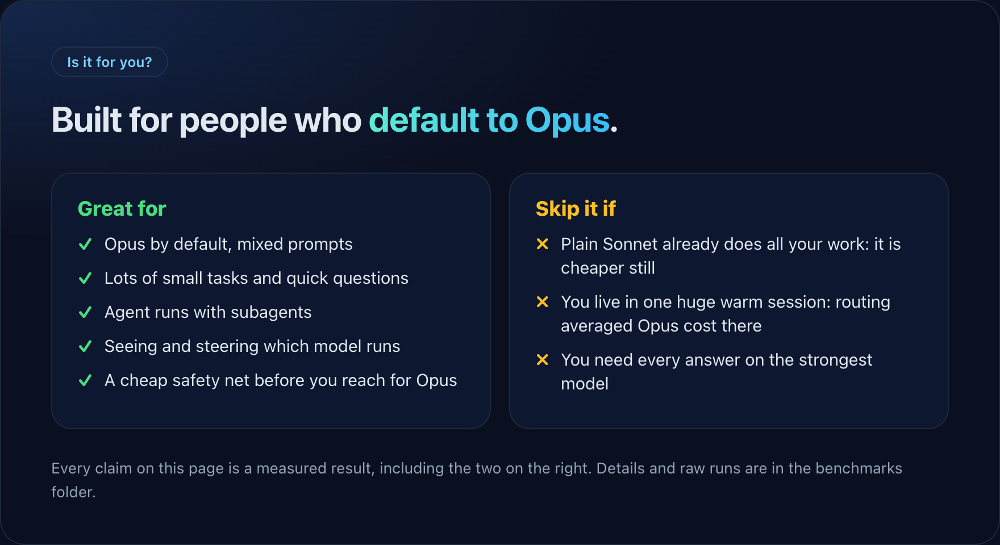
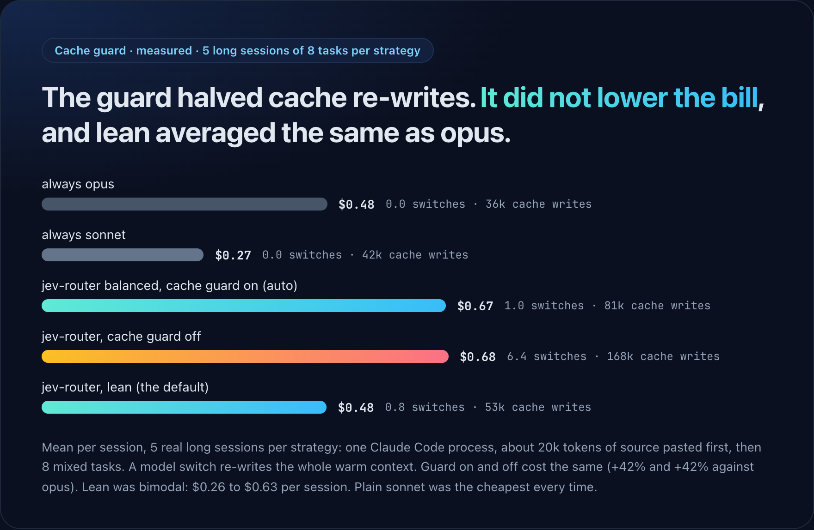
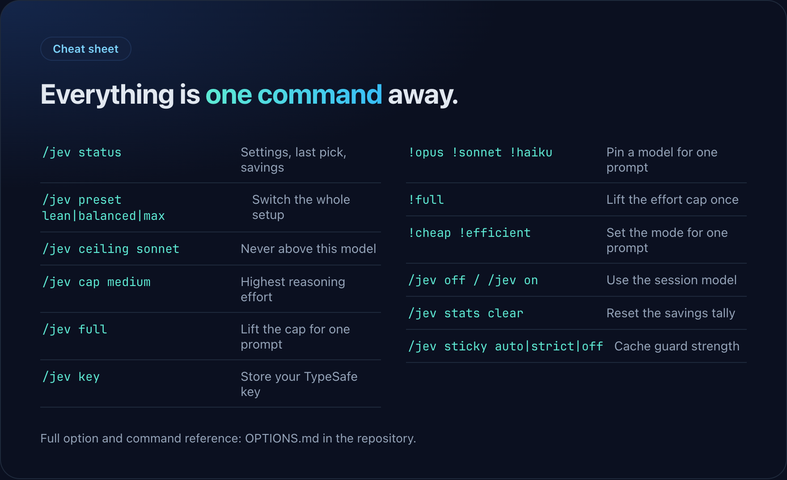

Install the Claude Code plugin
/plugin marketplace add dominicrico/jev-router
/plugin install jev-router@jev-routerThen /jev key <your TypeSafe key> (or set TYPESAFE_API_KEY) and run /jev status. That is the whole setup: the lean preset is on by default.

See every pick, live

What you get


Does it reduce Claude Code costs?
Yes, on most work, and the benchmarks say where it does not. Every number is a real Claude Code run (hard tasks are graded by hidden tests the agent never sees), and the raw runs are in the benchmarks folder.

Is it for you?

Long warm sessions are the honest weak spot: the cache guard cuts model switches from 6 to 1 and halves cache re-writes, but the bill stayed the same, and lean averaged Opus cost there while plain Sonnet was 43% cheaper.

Commands

Every option, preset and the privacy details are in the reference.
FAQ
How do I switch between Opus, Sonnet and Haiku automatically in Claude Code?
Install jev-router. It picks per prompt, again before each step, and once per subagent. Pin one prompt with !opus, !sonnet or !haiku.
How do I reduce Claude Code token cost?
Send easy tasks to cheaper models and cap the reasoning effort. jev-router does both: small tasks −97%, everyday work −65% against always Opus. If plain Sonnet already does your work, use that; it was cheapest on the hard set.
What is the effort cap?
Jev often asks for xhigh reasoning on hard tasks, which can triple the tokens. The default lean preset limits effort to medium; !full lifts it for one prompt.
Does the prompt cache guard work?
On switches, yes: 6 to 7 down to 1, and cache re-writes halve. It did not lower the bill in long warm sessions, where plain Sonnet is the cheapest safe choice.
Does it send my code anywhere?
The prompt, optionally recent messages, and subagent task text go to api.typesafe.ai. Keys, tokens, private keys and password= style values are redacted first, and sendHistory turns the history off. Pattern redaction is not a guarantee.
Will it slow Claude Code down?
Each Jev call adds about 250 ms. After three failed calls in a row it pauses for a minute and keeps the current model.